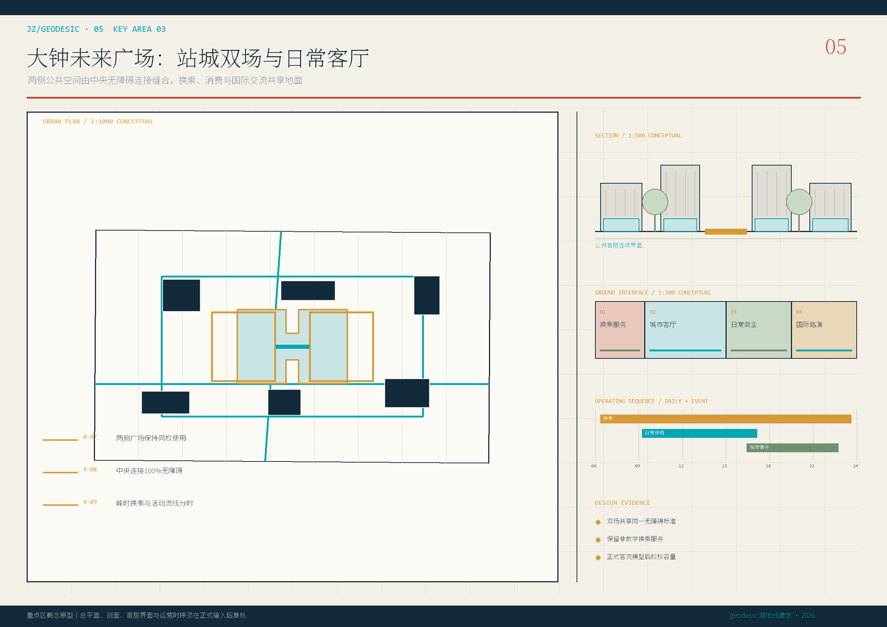
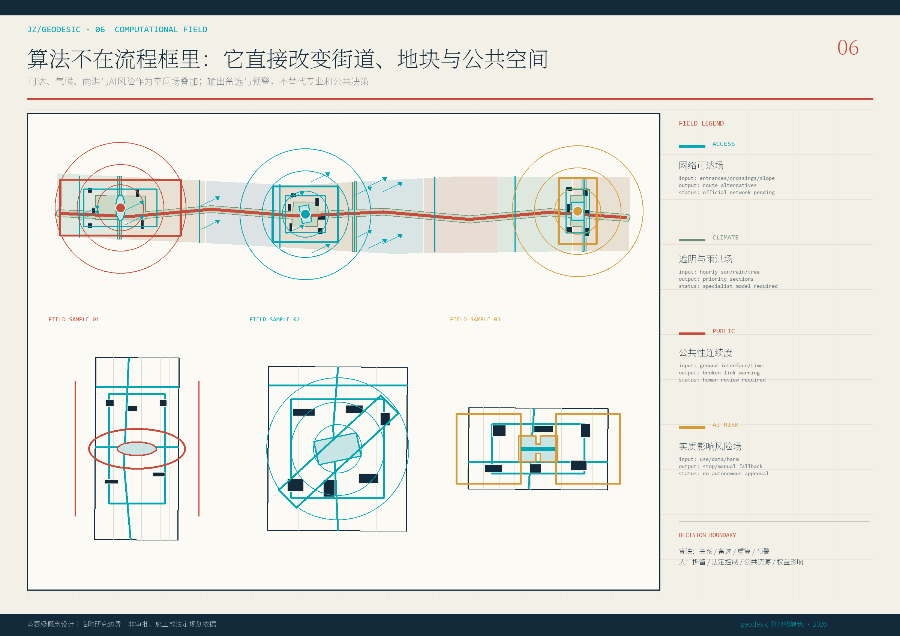
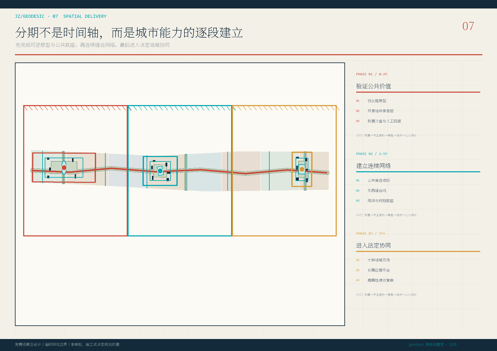

总体城市设计
一脊、三庭、八段场

AA 的计算推演内核 × Foster 式清晰空间秩序
远看有城市结构，近看有计算证据
重点区域 · 用地分区 · 交通慢行 · 蓝绿公共空间 · 更新项目 · AI 场景
覆盖公告 1.3、1.4、1.5 与 agent.1—agent.6；以 deterministic、spatial、visual、professional 四项仓库检查为准。
来源包括官方公告、任务书、站点包、专业标准、AA/Foster/Arup/NIST 方法资料与 OSM 背景。假设包括临时边界、未知法定控制及待核验工程条件。
一脊、三庭、八段场
铁路、公共首层、慢行与基础设施协同

可撤回的城市测试院落

穿过街区的共享首层

站城双场与日常客厅

算法规则直接叠加到空间

逐段建立城市能力

统一字体、线型、色彩与证据状态